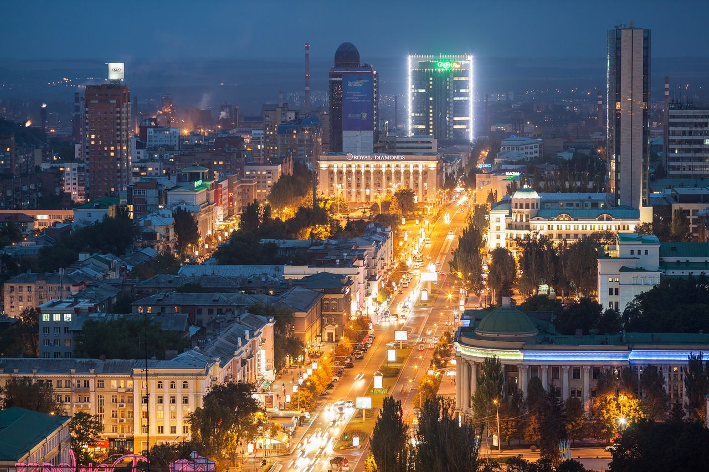
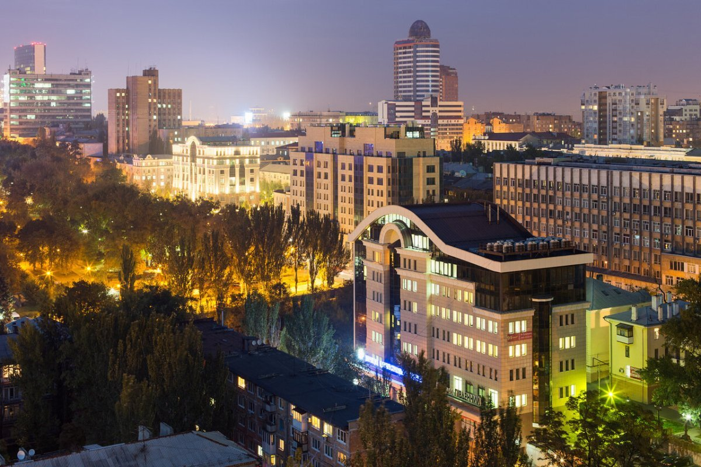
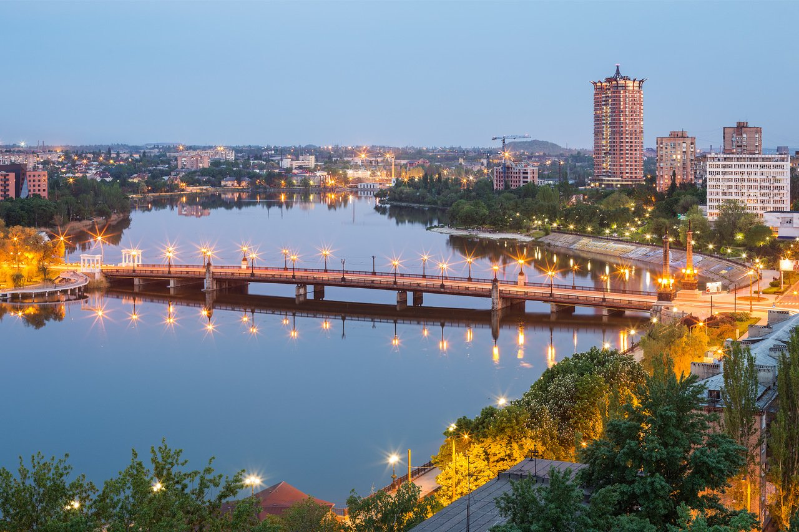
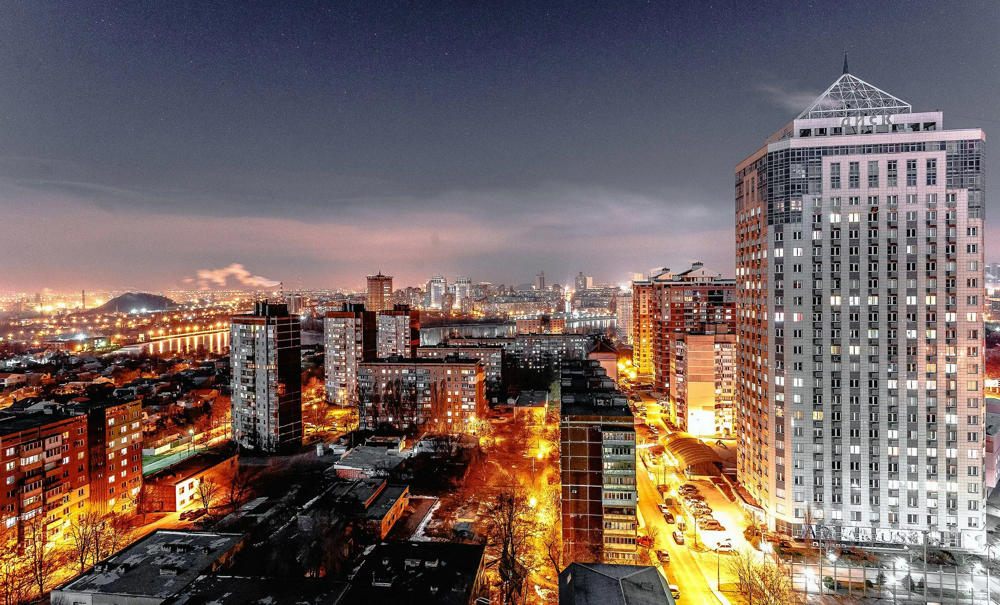
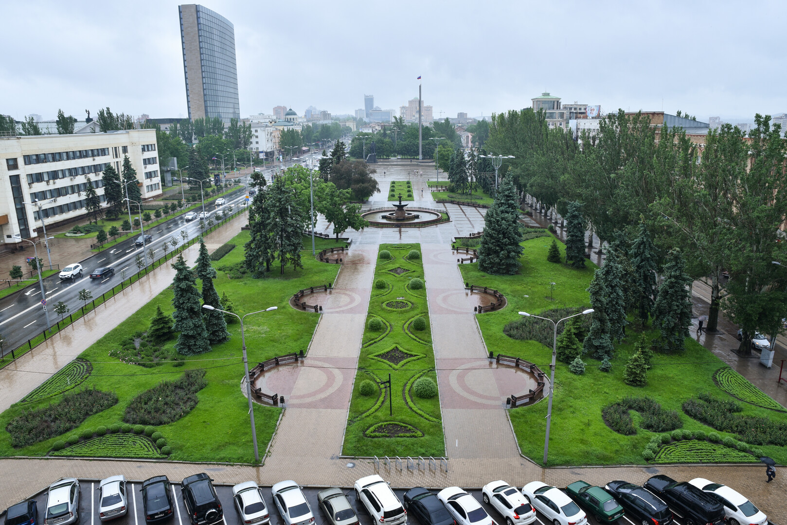
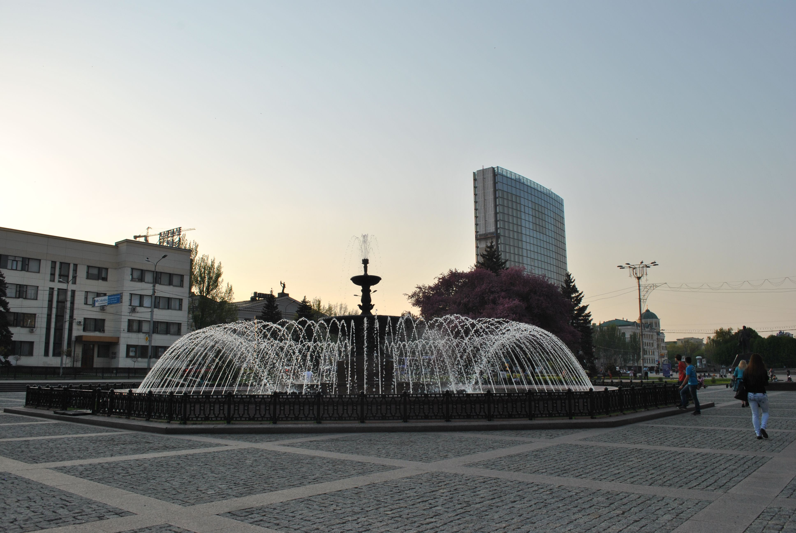

Город Донецк
Донецк — крупный промышленный город России, административный центр Донецкой народной республики.






Новости
1. Москва - Донецку: Столица страны помогает преобразиться столице нашей Республики
2. Подарок - каждому ребенку: Санкт-Петербург доставил 25 тысяч новогодних наборов для детей Мариуполя
3. «Своих не бросаем»: В Мариуполь доставили большой гуманитарный груз для жителей и военных